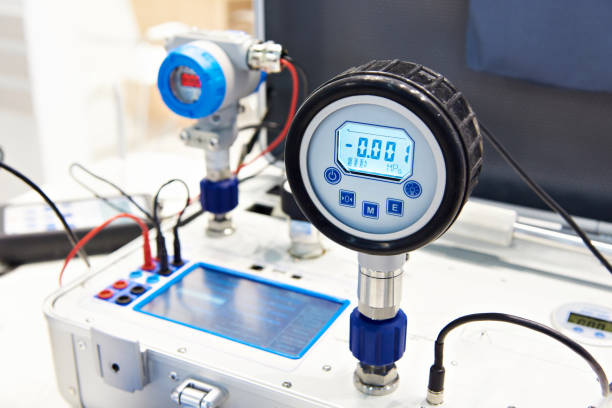
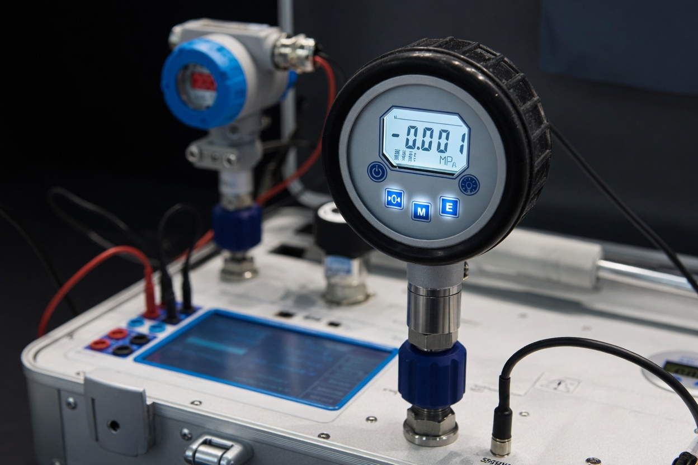
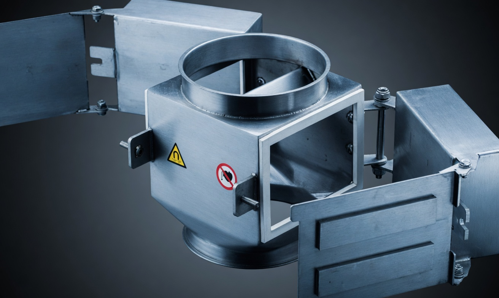

PROCESS CALIBRATION garantit la précision, la conformité et la traçabilité de vos instruments de mesure industriels et biomédicaux. Résultats certifiés. Interventions rapides. Expertise reconnue en Afrique de l'Ouest.
De l'industrie lourde à la clinique médicale, PROCAL adapte son expertise aux exigences spécifiques de chaque environnement.
Métrologie appliquée aux procédés de fabrication lourde et conformité de vos équipements industriels.
Garantie de la chaîne du froid, contrôle de température et précision des dosages de production.
Respect rigoureux des normes qualité internationales et traçabilité absolue de vos mesures.
Étalonnage haute précision de vos instruments d'analyse pour des résultats d'essais hautement fiables.
Sécurité des patients assurée par le contrôle strict et la conformité de vos dispositifs biomédicaux.
Exactitude et robustesse des mesures de pesage et de pression en environnements industriels extrêmes.
Optimisation énergétique, conformité environnementale et valorisation rigoureuse des ressources.
Chaque service est réalisé selon des méthodes rigoureuses, documentées et traçables. Nos certificats et rapports techniques sont acceptés par les organismes de certification et autorités réglementaires.



PROCESS CALIBRATION (PROCAL) s'impose comme le partenaire stratégique des entreprises exigeantes en Côte d'Ivoire et en Afrique de l'Ouest. Nous allions rigueur scientifique, équipements de pointe et réactivité opérationnelle pour sécuriser vos chaînes de production et valider vos audits réglementaires.
Une équipe de métrologues chevronnés maîtrisant les référentiels internationaux pour garantir le succès de vos audits qualité les plus exigeants.
Interventions rapides sur site pour minimiser l'arrêt de vos lignes, suivies d'une livraison de vos rapports certifiés sous 48 heures.
Rapports techniques officiels, certificats d'étalonnage et historique de mesures numérisés. Une rigueur absolue, sans aucune approximation.
Prestations en conformité totale avec les réglementations locales et globales, protégeant efficacement votre responsabilité industrielle.
Décrivez votre besoin via notre formulaire en ligne. Notre équipe vous répond avec une proposition adaptée.
Entreprise spécialisée dans les services de métrologie, d'étalonnage et de contrôle technique. Nous accompagnons les industries, les laboratoires et les établissements de santé dans la vérification et la certification de leurs équipements.
Assurer la précision, la fiabilité et la conformité des instruments de mesure pour améliorer la qualité, la sécurité et la performance de vos installations.
Devenir le partenaire de référence en métrologie et contrôle industriel en Afrique de l'Ouest.
IMMEUBLE TOURE
QUARTIER BLACHON
BINGERVILLE, Côte d'Ivoire
Lundi – Vendredi : 08h00 – 18h00
Samedi : 08h00 – 13h00